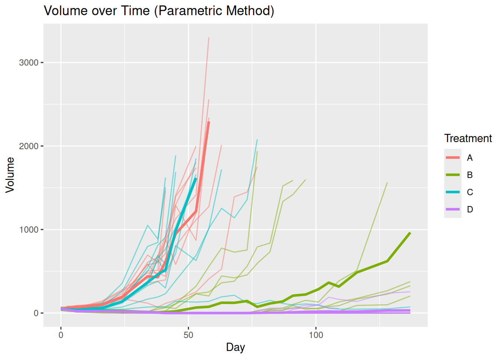
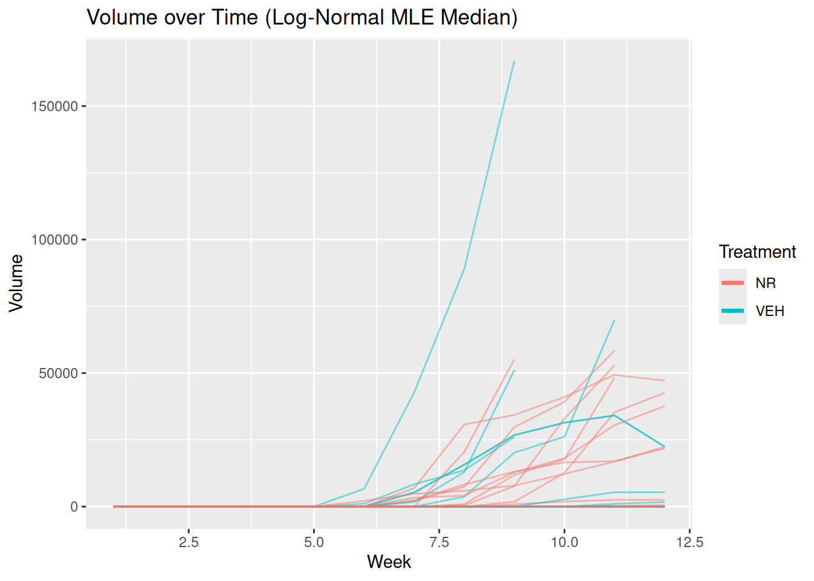
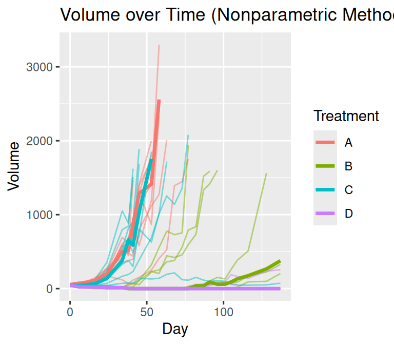

Another Melanoma Data Set, melanoma1
data(melanoma1)
mel1 <- tumr(melanoma1, ID, Day, Volume, Treatment)
plot_median(mel1)
Breast Cancer Data Set, breast
data(breast)
breast_meta <- tumr(breast, ID, Week, Volume, Treatment)
plot_median(breast_meta)
Prostate Cancer Data Set, prostate
data(prostate)
pros_meta <- tumr(prostate, ID, Age, BLI, Genotype)
plot_median(pros_meta)